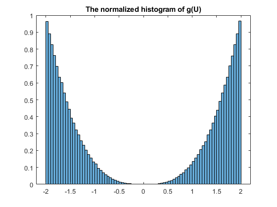
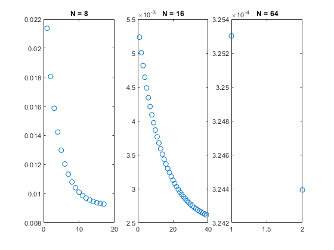
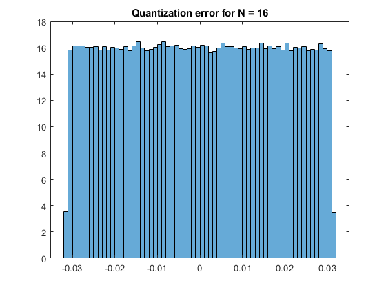

close all, clear all, clc
n = 500000;
U = rand(1,n);
X = rand(1,n);
for i = 1:1:n
X(1,i) = G(U(1,i));
end
hist = histogram( X , 'normalization' , 'pdf');
title('The normalized histogram of g(U)')
MSE_mat = [(MSE(8)) (MSE(16)) (MSE(64))];
SQNR_mat = [8/(MSE_mat(1)*3) 8/(MSE_mat(2)*3) 8/(MSE_mat(3)*3)];
[Ai_8,Q_8] = Quan(X,8);
[Ai_16,Q_16] = Quan(X,16);
[Ai_64,Q_64] = Quan(X,64);
Quantized = [X; Q_8; Q_16; Q_64];
figure(1)
A = 0;
B = 0;
C = 0;
for i = 1:1:n
A = A + (X(1,i)-Q_8(1,i))^2;
B = B + (X(1,i)-Q_16(1,i))^2;
C = C + (X(1,i)-Q_64(1,i))^2;
end
MSE_Quan = [A/n B/n C/n];
SQNR_Quan = [(8*n)/(3*A) (8*n)/(3*B) (8*n)/(3*C)];
SQNR_Quan_2 = [mean(Quantized(2,:).^2)/MSE_Quan(1) mean(Quantized(3,:).^2)/MSE_Quan(2) mean(Quantized(4,:).^2)/MSE_Quan(3)];
disp('MSE,mat,Quan');
disp([MSE_mat;MSE_Quan]);
disp('SQNR,mat,Quan');
disp([SQNR_mat;SQNR_Quan]);
Xhat_8 = [];
[Ai_t_8,Xhat_t_8] = Quan_NonUniform(X,8,Ai_8);
Ai_8 = [Ai_8; Ai_t_8 ];
Xhat_8 = [Xhat_8, Xhat_t_8];
Quantized_8 = [ ];
MSE_8_Lloyd = [ MSE_Quan(1)];
k = 1;
bool = true;
while bool
Q_8_iterative = Quan_Non(X,8,Xhat_t_8);
Quantized_8 = [Quantized_8;Q_8_iterative];
MSE_8_Lloyd = [MSE_8_Lloyd;(mean((X-Q_8_iterative).^2))];
[Ai_t_8,Xhat_t_8] = Quan_NonUniform(X,8,Ai_t_8);
Ai_8 = [Ai_8; Ai_t_8 ];
Xhat_8 = [Xhat_8; Xhat_t_8];
bool = (MSE_8_Lloyd(k+1) < MSE_8_Lloyd(k)*(0.995));
k = k + 1;
end
Xhat_16 = [];
[Ai_t_16,Xhat_t_16] = Quan_NonUniform(X,16,Ai_16);
Ai_16 = [Ai_16; Ai_t_16 ];
Xhat_16 = [Xhat_16, Xhat_t_16];
Quantized_16 = [ ];
MSE_16_Lloyd = [ MSE_Quan(2)];
k = 1;
bool = true;
while bool
Q_16_iterative = Quan_Non(X,16,Xhat_t_16);
Quantized_16 = [Quantized_16;Q_16_iterative];
MSE_16_Lloyd = [MSE_16_Lloyd;(mean((X-Q_16_iterative).^2))];
[Ai_t_16,Xhat_t_16] = Quan_NonUniform(X,16,Ai_t_16);
Ai_16 = [Ai_16; Ai_t_16 ];
Xhat_16 = [Xhat_16; Xhat_t_16];
bool = (MSE_16_Lloyd(k+1) < MSE_16_Lloyd(k)*(0.995));
k = k + 1;
end
Xhat_64 = [];
[Ai_t_64,Xhat_t_64] = Quan_NonUniform(X,64,Ai_64);
Ai_64 = [Ai_64; Ai_t_64 ];
Xhat_64 = [Xhat_64, Xhat_t_64];
Quantized_64 = [ ];
MSE_64_Lloyd = [ MSE_Quan(3)];
k = 1;
bool = true;
while bool
Q_64_iterative = Quan_Non(X,64,Xhat_t_64);
Quantized_64 = [Quantized_64;Q_64_iterative];
MSE_64_Lloyd = [MSE_64_Lloyd;(mean((X-Q_64_iterative).^2))];
[Ai_t_64,Xhat_t_64] = Quan_NonUniform(X,64,Ai_t_64);
Ai_64 = [Ai_64; Ai_t_64 ];
Xhat_64 = [Xhat_64; Xhat_t_64];
bool = (MSE_64_Lloyd(k+1) < MSE_64_Lloyd(k)*(0.995));
k = k + 1;
end
MSE_Lloyd = [MSE_8_Lloyd(length(MSE_8_Lloyd)) MSE_16_Lloyd(length(MSE_16_Lloyd)) MSE_64_Lloyd(length(MSE_64_Lloyd))]
SQNR_Lloyd = [8/(3*MSE_8_Lloyd(length(MSE_8_Lloyd))) 8/(3*MSE_16_Lloyd(length(MSE_16_Lloyd))) 8/(3*MSE_64_Lloyd(length(MSE_64_Lloyd)))]
figure(2)
subplot(1,3,1)
plot([1:1: size(MSE_8_Lloyd,1)],MSE_8_Lloyd,'o');
title('N = 8');
subplot(1,3,2)
plot([1:1: size(MSE_16_Lloyd,1)],MSE_16_Lloyd,'o');
title('N = 16');
subplot(1,3,3)
plot([1:1: size(MSE_64_Lloyd,1)],MSE_64_Lloyd,'o');
title('N = 64');
figure(3);
DENEM = X - Quantized_64(size(Quantized_64,1),:) ;
hist = histogram( DENEM , 'normalization' , 'pdf');
title('Quantization error for N = 16');
MSE,mat,Quan
0.0214 0.0052 0.0003
0.0214 0.0052 0.0003
SQNR,mat,Quan
1.0e+03 *
0.1249 0.5088 8.1888
0.1248 0.5097 8.1975
MSE_Lloyd =
0.0093 0.0026 0.0003
SQNR_Lloyd =
1.0e+03 *
0.2875 1.0199 8.2205
  